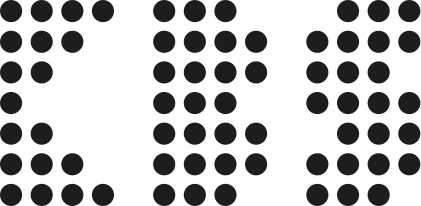

For start I’m a full-stack Web Devlopoer.
Lots to discuss, so if you wanna more details on how I handled my projects in the last two years.
Take a break and download my Resume!

For start I’m a full-stack Web Devlopoer.
Lots to discuss, so if you wanna more details on how I handled my projects in the last two years.
Take a break and download my Resume!
To avoid the long process of store a user's simple activities in the database is to store them in his/her browser...
Maintenance injects fresh blood into the application. After deploying your application to production it needs to be maintained...
On a website, validation errors and full-page errors are ways to show the user that the request does not proceed so they...
On the other hand, for setting Layouts, you can have your own bootstrap. A list of requirements is the first and the most important step of having...